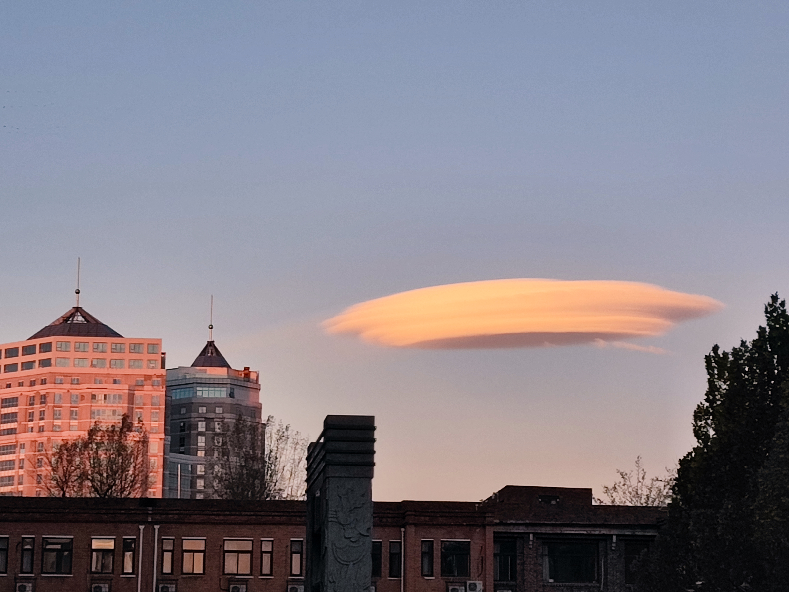

来到这个学校已经一年有余，回望过去的一年，我从迷茫懵懂的大一新生，已经进化为大二新生（误）。在过去的一年多里，我努力学习，高分拿下英语四级，成功通过计算机二级C++科目，并获得了学业三等奖学金与三好学生称号。学习之余我也抓紧能出校的机会，用足迹丈量北京城，感受北京的历史古韵与风土人情。这一年多经历了太多未曾经历过的，也见识到太多未曾见识过的。一切一切，让我更加坚定了脚踏实地，安心走下去的信心。
对于接下来的，已经过半了的大二，以及大三、大四，我需要先尽力拿下英语六级。在未来几年里努力学习英语，提升英语水平。同时也尽力打磨自己的专业知识，以保研为目标而努力。除此之外还要努力学习辅修专业，但也不要因为辅修而误了专业课的学习，要二者兼顾。同时再努力准备参加一些竞赛，提升自己。学习之余，我仍想坚持多出校走走的想法，多在北京城里转转。在条件允许的情况下，还可以在寒暑假到其他省份旅行，看看祖国的大好河山。
除此之外，我还想努力阅读、观影。希望以后也能坚持从图书馆借书、阅读，同时也希望自己能拓宽阅读范围，广泛涉猎其他领域。在未来希望也能继续延续大一的夏季学期时，每周一部电影的计划，欣赏并学习。在闲暇之余也可以享受自己的爱好，尽情尝试自己感兴趣的东西。
大学四年是前一个阶段的结束，但也是新阶段的开始，希望自己在旅途中也不要忘记旅途本身的意义。
最后，放上2021年11月拍摄的，一张我很喜欢的云。
